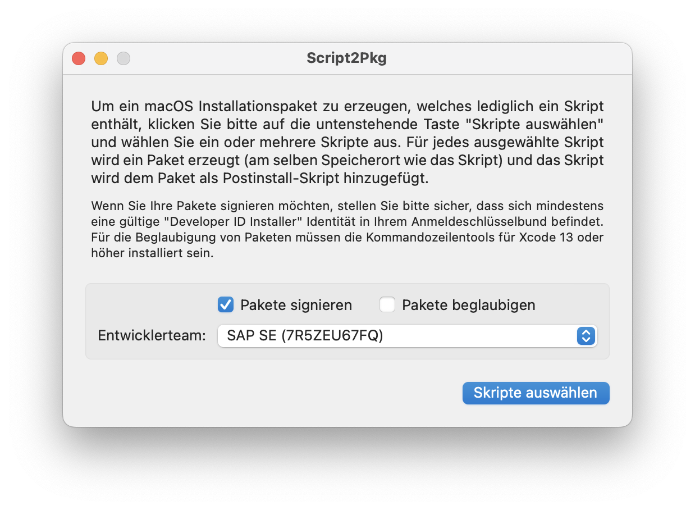
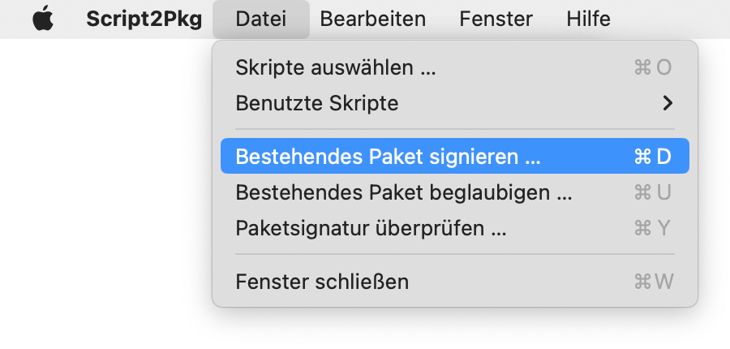
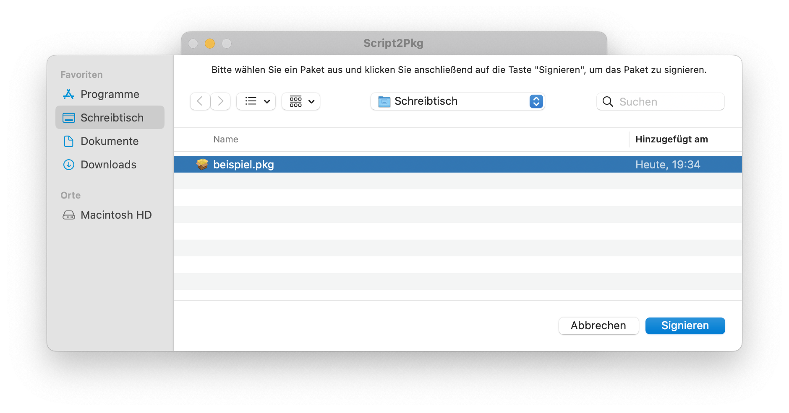
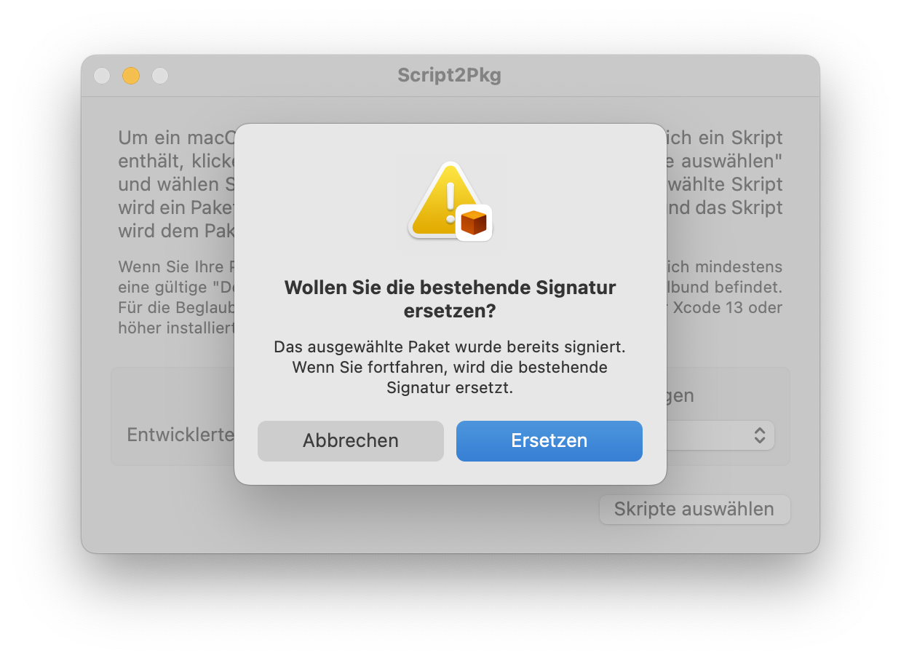
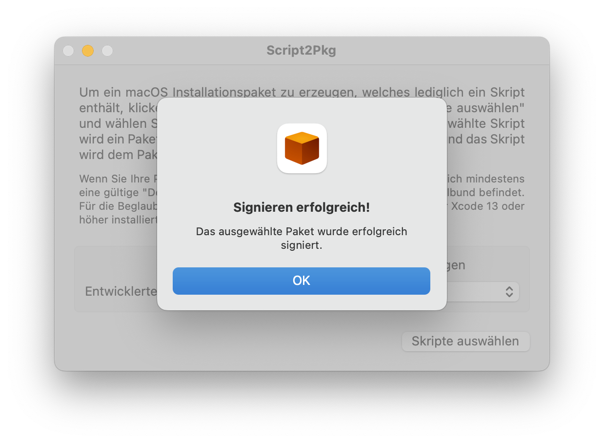

Script2Pkg
Script2Pkg
Script2Pkg
Bestehende Pakete signieren
Script2Pkg kann bestehende Pakete signieren. Somit haben Sie die Möglichkeit, ein unisigniertes Paket nachträglich zu signieren, oder ein Paket mit einer abgelaufenen Signatur erneut zu signieren. Um ein Installationspaket zu signieren, gehen Sie bitte wie folgt vor:
1. Starten Sie die Anwendung.
2. Vergewissern Sie sich, dass die Option Pakete signieren aktiviert ist.

3. Wählen Sie im Menü Datei den Menüpunkt Bestehendes Paket signieren … aus.

4. Wählen Sie ein Paket aus und klicken Sie die Taste Signieren .

5. Sollte das Paket bereits signiert sein, wird die Script2Pkg Sie fragen, ob die bestehende Signatur ersetzt werden soll. Klicken Sie die Taste Ersetzen um fortzufahren.

6. Script2Pkg meldet zurück, ob das Paket erfolgreich signiert wurde.
